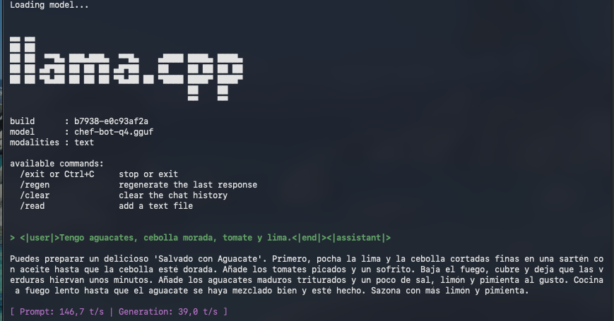

Guía de Creación de LLM Local en MAC
De Modelo Generalista a Experto Culinario
Crear un asistente de cocina personalizado ejecutándose 100% local en un Mac Mini, optimizado para chips M1/M2/M3.
Abandonamos Axolotl (optimizado para NVIDIA) y adoptamos MLX, la librería nativa de Apple, junto con una compilación manual de llama.cpp usando CMake.
# 1. Crear entorno seguro
python3 -m venv venv
source venv/bin/activate
# 2. Instalar motor MLX (Nativo Apple Silicon)
pip install mlx-lm
# 3. Compilar llama.cpp con soporte Metal (GPU)
pip install cmake
git clone https://github.com/ggerganov/llama.cpp.git
cd llama.cpp
cmake -B build
cmake --build build --config Release -jCreamos un dataset quirúrgico en formato JSONL, aplicando manualmente la plantilla de prompt de Phi-3 para asegurar coherencia.
# Ejemplo de una línea en data/train.jsonl
{"text": "<|user|>Ingredientes: patatas, huevos.<|end|><|assistant|>Haz una Tortilla de Patatas...<|end|>"}Usamos Low-Rank Adaptation (LoRA) para entrenar solo una pequeña capa de adaptadores sobre el modelo base Phi-3-mini.
# Ejecución del entrenamiento con MLX
python -m mlx_lm.lora --config config_chef.yaml --trainResultado: Una carpeta adapters conteniendo la "personalidad" del chef.
El proceso de ingeniería más complejo: Soldar los adaptadores al cerebro y comprimirlo a 4 bits.
# 1. Fusionar Adaptadores + Modelo Base
python -m mlx_lm.fuse --model microsoft/Phi-3-mini-4k-instruct --adapter-path adapters --save-path merged_model
# 2. Convertir a formato GGUF (F16)
python llama.cpp/convert_hf_to_gguf.py merged_model --outfile chef-bot-f16.gguf
# 3. Cuantizar a q4_k_m (Compresión final)
./llama.cpp/build/bin/llama-quantize chef-bot-f16.gguf chef-bot-q4.gguf q4_k_mDocumentación de los obstáculos encontrados durante la práctica.
Causa: Intentamos instalar versiones de PyTorch inestables no compatibles con el entorno.
✅ Solución: Pivotar a pip install mlx-lm (Nativo Apple) y Torch estable.
Causa: llama.cpp deprecó el uso de make tradicional recientemente.
✅ Solución: Instalar cmake vía pip y compilar usando el nuevo sistema de construcción.
Causa: La sintaxis de MLX cambió y ya no acepta archivos config para la fusión.
✅ Solución: Usar argumentos explícitos: --model, --adapter-path, --save-path.
Causa: Ejecutamos el script desde la carpeta raíz, pero los adaptadores se crearon dentro de llama.cpp.
✅ Solución: Mover la carpeta con mv llama.cpp/adapters . para corregir la ruta.
Inferencia exitosa corriendo a 39 tokens/segundo en local.
El modelo generó una receta de "Salvado con Aguacate" (Alucinación creativa debido al dataset pequeño, pero funcional).
Captura de pantalla: Ejecución real en Mac Mini